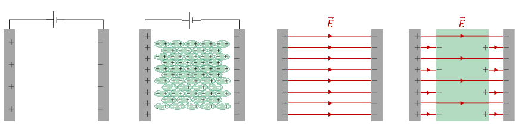

Campo de rigidez o ruptura dieléctrica: Campo umbral que permite la descarga de los conductores; el medio (entre las dos placas del capacitor) pierde su propiedad aislante y pasa a ser conductor. ejemplo: \(E^{teflón}_{ruptura dieléctrica} = 60 MV/m\)
Soporte mecánico: Una capa delgada de aislante permite acercar las placas sin que se entren en contacto, e incluso enrollarlas o apilarlas para aumentar el área total.
Cuando un material dieléctrico es expuesto a un campo eléctrico, éste se polariza formando dipolos que crean un efecto de apantallamiento del campo eléctrico, disminuyéndolo.
Si lleno el espacio entre las placas de un capacitor con un dielélectrico, siempre hay un aumento de la capacitancia del capacitor. 2 razones:
- A potencial constante, aumentan las cargas de las placas.
- A carga constante, disminuye el potencial entre las placas.
Si \(C_0\) es la capacidad con vacío y \(C\) la capacidad con espacio lleno con dieléctrico. Entonces hay \(\epsilon_r\) mayor a uno (permitividad dieléctrica), tal que \(C = \epsilon_r C_0\).
-
ejemplos:
- \(\epsilon_r^{vacio} = 1\)
- \(\epsilon_r^{aire} \approx 1\)
- \(\epsilon_r^{teflón} = 2,1\)
Todo este fenómeno se debe a la polarización del medio dieléctrico. Cuanto más fácil se polarice el dieléctrico, mayor será la permitividad dieléctrica.
- Las cargas de polarización en las superficies del dieléctrico atraen más cargas del signo opuesto a las placas adyacentes (y repelen más carga del mismo signo).Luego, aumenta la carga de las placas.
- Como parte de las líneas de campo que nacen en la placa positiva mueren en las cargas de polarización de la superficie del dieléctrico, la intensidad del campo a lo largo de todo el dieléctrico es menor que si hubiera vacío.
